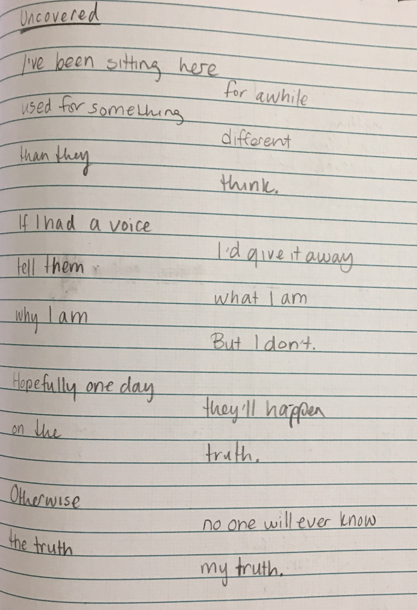

In my Anth 392 (Storytelling in Archaeology) class, we have this one set of assignments called the “Create Assignments.” One of our options for this assignment was to write ten pieces in multiple styles of writing. In this post, I want to share some of things I wrote. Mostly I want to share the poems I wrote because they’re what I’m most proud of. Most of these I wrote based on prompts given to us in the assignment, but not all of them!
This first poem I wrote, called “Uncovered” is written from the perspective of an archaeological artefact. I had loads of fun writing it, as I do with any sort of poetic writing. Hope you like it!
{kind=link}
This next poem I wrote is definitely my favourite. It’s a poem about an important archaeological tool (the trowel) formatted to be trowel-shaped. I had the most fun with this poem and especially enjoyed the process of making it all fit into the right shape. This is the piece I made that wasn’t based off a prompt!

Another prompt we were given was to tell a story of a heritage site in Victoria, BC. I chose to do this in poem form too, telling the story of Chinatown, the oldest Chinatown in Canada. How cool is that! For this one I had to do a little bit of research on the history of Chinatown. Here’s my poem:

Now, this piece of writing isn’t a poem. I created a Podcast script for the prompt “retell a recent news article.” Here it is. Maybe I’ll record it sometime??
.jpg)
This final poem I also wrote for the prompt “retell a recent news article.” I thought it would be fun and innovative to tell certain archaeological news in poem format. So, I did.
.jpg)
Hope you liked these five written pieces I made for my Archaeology class! I definitely had fun writing them and wanted to share them with you. Which one is your favourite? Let me know in the comments below!